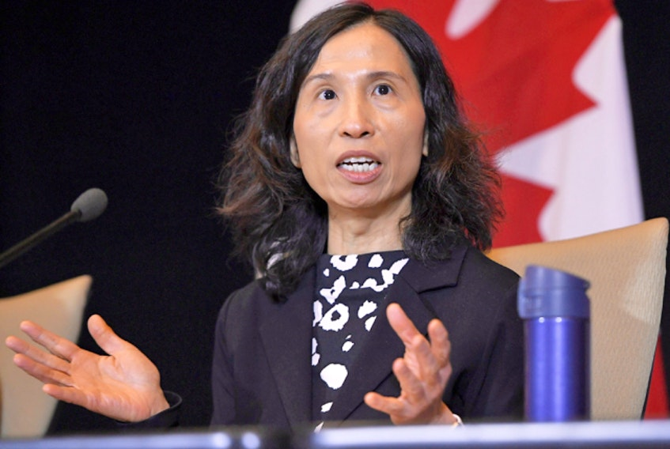

Dr. Theresa Tam has a huge impact on our world right now and she carries a lot of knowledge leading the way to prevent  the corona virus Canada as well as the world. But where was she before all this and how did she work her way up to the position she holds now? Before Dr. Tam was CPHC ( chief public health officer of Canada) she attended medical school at the University of Nottingham where she earned her BMBS. She didn;t stop there and gained her pediatirc residency at the University of Alberta as well as her pediatric infectious diseases fellowship at University of British Columbia. She kept working hard and In 2006 Dr. Tam was was the Director of the Immunization and Respritory infections division where she played a large role in Canada's public health emergencys including sever acute respiratory syndrome, pandemic influenza, ebola, and covid-19.
Dr. Tam's as a Leader and Role Model
Dr. Tam has been such a role mnodel and leader to the Canadian health community and people in general. During her 20 years in public health, she has provided technical expertise and leadership to improve communicable disease surveillance, enhance immunization programs, and strengthen health emergency management. Dr. Tam has has her priorities in check by making sure her focus on the impacts of the pandemic was on seniors, essential workers, and people living with disabilities which I respect a lot. Dr. Tam has a quote on COVID that I enjoy a lot because it describes her personallity and heart well, “No one is protected until everyone is protected.”.
Contribution to Help End Covid-19
Considering Dr. Tam is leading Canada throught the pandemic she has contributed greatly to Canada. January of 2020 Dr. Tam was a part of the WHO committee at the time where they declared corona a global pandemic after the rapidly growing cases in America, Canada and Korea. Dr. Tam is one of firsts to inform Canada about the new aspects of covid and how we can decrease the chances of getting it. Dr. Tam was the one who reccommended having to wear a mask and to social distance these restrictions prevented many many cases. Dr. Tam is also working on the Covid-19 vaccine with many other scientists keeping everyone updated on restrictions and effects that the vaccine may have. Since Dr. Tam is the federal governments lead health professional she is constantly providing advice to the minister of health.
 Dr. Tam has been such a role mnodel and leader to the Canadian health community and people in general. During her 20 years in public health, she has provided technical expertise and leadership to improve communicable disease surveillance, enhance immunization programs, and strengthen health emergency management. Dr. Tam has has her priorities in check by making sure her focus on the impacts of the pandemic was on seniors, essential workers, and people living with disabilities which I respect a lot. Dr. Tam has a quote on COVID that I enjoy a lot because it describes her personallity and heart well, “No one is protected until everyone is protected.”.
Dr. Tam has been such a role mnodel and leader to the Canadian health community and people in general. During her 20 years in public health, she has provided technical expertise and leadership to improve communicable disease surveillance, enhance immunization programs, and strengthen health emergency management. Dr. Tam has has her priorities in check by making sure her focus on the impacts of the pandemic was on seniors, essential workers, and people living with disabilities which I respect a lot. Dr. Tam has a quote on COVID that I enjoy a lot because it describes her personallity and heart well, “No one is protected until everyone is protected.”.